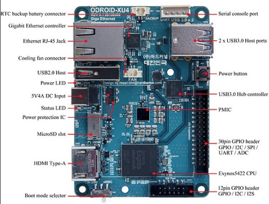
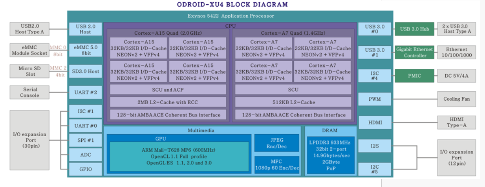
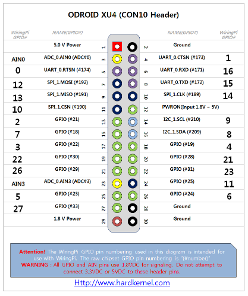
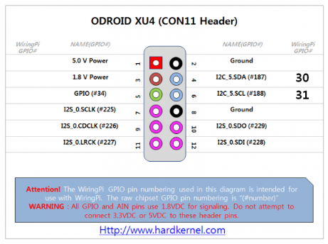

Odroid XU4
Hardware
- CPU: Exynos5422 Samsung Exynos5 Octa ARM Cortex™-A15 Quad 2Ghz and Cortex™-A7 Quad 1.3GHz CPUs
- GPU: Mali-T628 MP6(OpenGL ES 3.1/2.0/1.1 and OpenCL 1.2 Full profile)
- 2 USB 3 Ports, 1 USB 2 Port
- Gigabit Ethernet
- HDMI (no Audio In/Out)
- Memory 2GB LPDDR3 RAM at 933MHz (14.9GB/s memory bandwidth) PoP stacked
Overview:

Block Diagram:

Pinout (CON10 Header):

Pinout (CON11 Header):

Linux
- Flashing Tool (WindowsWin32DiskImager) http://com.odroid.com/sigong/nf_file_board/nfile_board_view.php?keyword=&tag=&bid=199
Ampache
To be found in /var/www/html/ampache.
Config file: config/ampache.cfg.php
Log file: var/www/html/ampache/log/
Localplay
Ampache can control an MPD-server.
Use MPD-server
There is a MPD-controller already in /modules/localplay/.
Different instances of the controller can be created in the Web Interface
with Add Instance when pressing the speaker icon.
Audio
USB Soundcard UGREEN https://www.ugreen.com/product/UGREEN_USB_External_Stereo_Sound_Card_Aux_and_2RCA_Converter-en.html#ad-image-0
This is necessary to loop line in to output:
pactl load-module module-loopback
Cloud Commander
In order to use it start (as odroid):
cloudcmd
and kill it again with Ctrl-c.
Process: cloudcmd
See also: usr/lib/node_modules/cloudcmd
Config file: ~/.cloudcmd.json
cloudcmd --show-config
GPIO
Export control of GPIO pin 21 to user space:
echo 21|sudo tee /sys/class/gpio/export
Now there should be a new directory /sys/class/gpio/gpio21 in which you
find various files, e.g. value.
Just cat value to read the current state of the pin (0 or 1).
For setting the pin issue
echo "out" > /sys/class/gpio/gpio21/direction
and write to value.
Kodi
Build Kodi
https://kodi.wiki/view/HOW-TO:Compile_Kodi_for_Debian_or_Ubuntu
- Dependencies
sudo apt-get update sudo apt-get build-dep kodi
Media Server
Plex Server
- Install Plex Media Server
- Sign up
- Add Library
- allow remote access to your media server
Plex Client
- Install App
MPD (Music Player Daemon)
MPD is running in system wide mode.
sudo apt-get install mpd
Will be installed as a service in /etc/init.d/:
sudo service mpd start|stop|restart
Start it verbose for troubleshooting:
sudo mpd --stdout --no-daemon --verbose
Configuration File: /etc/mpd.conf
Notes:
- Has to be started after
pulseaudioin order to work together with it.
Openmediavault (didn't work well)
Installation
There is a special image for Odroid. resize the image to the size of the SD Card (Just download tuxboot-xxx.exe).
- Use a live GParted Live CD if you can find it or
(- create bootable USB Stick with GParted using tuxboot)
To get to the console login with root pwd: openmediavault
Configuring the system
- mkdir /media/Toschiba
- mount /dev/sdb2 /media/BigData make fstab entry
share /media/BigData create samba share in file /etc/samba/smb.config
[PiShare] comment=Raspberry Pi Share path=/media/BigData browseable=Yes writeable=Yes only guest=no guest ok = yes create mask=0777 directory mask=0777 public=yes
TODO Reboot
To get the sound stuff working you need to do the following:
Restart mpd as user
(if started: sudo service mpd stop
sudo mpd
Change fstab: Uncomment USB-Drives.
sudo mount -a
The rest should work out of the box.
Load IR-module
sudo modprobe gpioplug_ir_recv gpio_nr=29 active_low=1
Create a symlink
sudo ln -s /dev/lirc0 /dev/lirc
Restart lircd and irexec
(if started: sudo service lirc stop)
sudo lircd sudo irexec -d
in ~/.profile
Load pulseaudio loopback module (sound input -> output)
pactl load-module module-loopback
Architecture
Apache is composed of modules
- protocol modules for http, ftp,… (e.g. mod_ftp, mod_pop3)
- extension modules for manipulating a request (hooks, filters)
Apache can be executed process or thread based.
Hocks implement an event mechanism for signaling events to other modules.
Shellinabox
The option --disable-ssl is important when using behind apache.
Add it in config file.
Start with service (config file: /etc/default/shellinabox)
sudo service shellinabox start|stop|restart
- css - options in
/etc/shellinabox/options-availableRead theREADMEfile. Default styles have a "+" in the name.
Manual start:
sudo shellinaboxd --disable-ssl
Transmission
~\.config\transmission\settings.json
Restart service:
sudo service transmission-daemon start
Use Transmission via VPN
You need a provider and a VPN program (e.g. OpenVPN) running together with transmission.
sudo apt-get update && sudo apt-get install openvpn
Providers:
- Ivacy
- NordVPN
Test: https://ipleak.net/
Tuning
https://obihoernchen.net/1416/odroid-xu4-tune-network-and-usb-speed/
iperf3 -s iperf3 -c 192.168.0.27
current network speed: ca. 50 Mbit/s (WiFi)
CPU Performance
List cpu cores:
lscpu -e
Detailed view including processes:
htop
Restrict a process to a specific CPU (taskset):
taskset --cpu-list 1,2 command
Ubuntu 16.04
Ubuntu Mate
Video
SDL (Simple Direct Media Layer)
libsdl2
Webserver Apache
The URLs a user types into the browser have to be mapped to file locations on the server. A DNS server resolves the domain name to an IP-address. The internal ServerName is used by apache to identify the correct virtual host configuration. So if a client uses different URLs to reach the same IP-address (those different names have to be resolved by a DNS server) apache will use the corresponding virtual host configuration related to that URL (contained in the http-request).
- ServerName
joesanmarzano.duckdns.org - DocumentRoot
/var/www/html
Config files:
/etc/apache2/apache.conf(Ubuntu version ofhttpd.conf)# Include the virtual host configurations: IncludeOptional sites-enabled/*.conf ServerName joesanmarzano.duckdns.org
What you have to modify is the content of /etc/apache2/sites-available although sites-enabled
is included in the apache.conf file (sites-enabled contains links to sites-available).
The .conf files contain configurations for virtual hosts listening on port 80 and 443.
DocumentRoot /var/www/html <Directory /var/www/html/nextcloud/> Options +FollowSymlinks AllowOverride All </Directory>
Restart service:
sudo service apache2 restart
Config Files and Programs
Default locations:
- HTML
htdocs- Config files
conf/httpd.conf(Ubuntu:/apache2/apache2.conf)- Log files
log/
Directives in the httpd.conf are described here: http://httpd.apache.org/docs/current/en/mod/directives.html.
Directive containers (sections) limit the scope of directives.
Directives outside of a section have server scope.
Modules
Apache can also be an FTP or POP3 etc. server. Apache can be process or thread based (Multi-Processing Modules).
Hooks
Hooks are a kind of event handlers.
Filters
SSL is implemented as a filter.
Virtual Hosts
The configuration can be found in a *.config file inside sites-available. It will then be
included in apache.conf when the server is started.
<VirtualHost *:443> </VirtualHost>
Reverse Proxy (Gateway)
A Reverse Proxy gets data for an outside client from the internal network making it look like the data is coming only from the Web server itself, i.e. the client is only talking to the Web server.
What for?
- Hide port numbers from the outside world (e.g. when using services like transmission, cloudcmd).
How to do it?
sites-available/000-default-le-ssl.conf:
SSLProxyEngine on ProxyPass /transmission/ http://localhost:9091/transmission/ ProxyPassReverse http://localhost:9091/transmission/ /transmission/ ProxyPass /cloudcmd/ http://localhost:4430/cloudcmd/ ProxyPassReverse /cloudcmd/ http://localhost:4430/cloudcmd/ ProxyPass /shell/ http://localhost:4200/ ProxyPassReverse http://localhost:4200/ /shell/ ProxyRequests On ProxyPreserveHost Off
- It's not necessary to turn on /ProxyRequests/(?).
Rewrite Rules
Needs mod_rewrite module.
RewriteEngine on
RewriteCond %{SERVER_NAME} =joesanmarzano.duckdns.org
RewriteRule ^ https://%{SERVER_NAME}%{REQUEST_URI} [END,NE,R=permanent]
Redirection
Redirect temp /news/ http://example.com/latest/news/
A request for http://example.com/news/index.html will be redirected to http://example.com/latest/news/index.html
temp status code (302)
Homepage
How to add search engine
- Tipue
Problem: need to generate index with their online tool: http://www.tipue.com/beaty/
goes to
tipuesearch_content.js - Zoom Problem: only free up to 50 pages
- Apache Lucene Written in Java.
- Sphinx
DuckDuckGo Search box
<iframe src="https://duckduckgo.com/search.html?site=https://joesanmarzano.duckdns.org/public_html/&prefill=Search Joe's Notes" style="overflow:hidden;margin:0;padding:0;width:408px;height:40px;" frameborder="0"></iframe>
For this to work, your site has to be indexed with Microsofts Bing.
Webcrawler, Spider
Apache Solr
Search Server based on Lucene. Seems to be overkill (~600 MB RAM). You start a Solr server (there is a browser interface).
solr start
Browser: http://localhost:8983
Then you use the bin/post tool to create index data.
solr-8.1.0:$ bin/post -c techproducts example/exampledocs/*
Lunr.js
lightweight text search engine inspired by solr.
- Need to create a javascript data structure (documents) out
of the html files.
- title
- headings
- paragraphs
- Use with
cheeriohtml parser.
jquery
- Have to generate a
searchindex.jsfile which contains an index already. wh_search.htmfile (precision helper)
Backup
Cron Tasks
See also: Linux.org::Cron
As root do crontab -e.
# minute hour day-of-month month day-of-week commmand 0-59 0-23 1-31 1-12 0-6 (Sun-Sat)
BigData
# runs every Monday at 01:00 0 1 * * 1 /home/odroid/bin/Backup/makeBigDataBackup.sh > /home/odroid/bin/Backup/logBigDataBackup.txt
SD Card
# runs every Sunday at 03:00 0 3 * * 0 /home/odroid/bin/Backup/makeSDCardBackup.sh > /home/odroid/bin/Backup/logSDCardBackup.txt
Nextcloud (run as www-data)
Nextcloud apps register actions with cron.php automatically to take care of typical housekeeping operations, such as garbage collecting of temporary files or checking for newly updated files using filescan() for externally mounted file systems.
# runs every 15 min */15 * * * * su www-data -c php -f /var/www/html/nextcloud/cron.php > /home/odroid/bin/Backup/logNextcloudCron.txt
# runs every day at 05:00 0 5 * * * su www-data -c php /var/www/html/nextcloud/occ files:scan --all > > /home/odroid/bin/Backup/logNextcloudScan.txt
Create SD-Card Backup
Removing the SD-Card
Win32 Disk Imager
- Click the Folder button and specify the image file
- Click the Read button
On the fly - while system is running
Identify SD-Card: sudo fdisk -l
Disk /dev/mmcblk1: 29.7 GiB, 31914983424 bytes, 62333952 sectors
Units: sectors of 1 * 512 = 512 bytes
Sector size (logical/physical): 512 bytes / 512 bytes
I/O size (minimum/optimal): 512 bytes / 512 bytes
Disklabel type: dos
Disk identifier: 0x3cedfd53
Device Boot Start End Sectors Size Id Type
/dev/mmcblk1p1 2048 264191 262144 128M c W95 FAT32 (LBA)
/dev/mmcblk1p2 264192 62332928 62068737 29.6G 83 Linux
Script using dd makeSDCardBackup.sh
#!/bin/bash # Backup OS to the USB Hard Disk Drive # Create a filename with datestamp for our current backup (without .img suffix) backupFolder = "/media/BigData/OdroidBackup/" ofile=$backupFolder "odroid_backup" # Create final filename, with suffix ofilefinal=$ofile.img # Begin the backup process, should take about 1 hour from 8Gb SD card to HDD echo "Backing up SD card to USB HDD as "$ofilefinal echo "This will take around 1 hour. Please wait..." sudo dd if="/dev/mmcblk1" of=$ofile bs=1M # Collect result of backup procedure result=$? # If command has completed successfully, delete previous backups and exit if [ $result = 0 ]; then echo "Successful backup, previous backup files will be deleted." mv $ofilefinal $ofilefinal "_1" mv $ofile $ofilefinal exit 0 # Else remove attempted backup file else echo "Backup failed! Previous backup files untouched." echo "Please check there is sufficient space on the HDD." rm -f $ofile exit 1 fi
Write image back to SD-Card
sudo umount /dev/sdc (if necessary) sudo pv -tpreb /media/BigData/Backup/OdroidBackup/odroid_backup.img -s `du -b /media/BigData/Backup/OdroidBackup/odroid_backup.img` | of=/dev/sdc bs=1M
Note: Could never boot the backup disk.
Alternative: rpi-clone
Yet another script: makeSDCardBackup_new.sh
#!/bin/bash # Setting up directories SUBDIR=raspberrypi_backups DIR=/hdd/$SUBDIR echo "Starting RaspberryPI backup process!" # First check if pv package is installed, if not, install it first PACKAGESTATUS=`dpkg -s pv | grep Status`; if [[ $PACKAGESTATUS == S* ]] then echo "Package 'pv' is installed." else echo "Package 'pv' is NOT installed." echo "Installing package 'pv'. Please wait..." apt-get -y install pv fi # Check if backup directory exists if [ ! -d "$DIR" ]; then echo "Backup directory $DIR doesn't exist, creating it now!" mkdir $DIR fi # Create a filename with datestamp for our current backup (without .img suffix) OFILE="$DIR/backup_$(date +%Y%m%d_%H%M%S)" # Create final filename, with suffix OFILEFINAL=$OFILE.img # First sync disks sync; sync # Shut down some services before starting backup process echo "Stopping some services before backup." service apache2 stop service mysql stop service cron stop # shellinabox # samba # # Begin the backup process, should take about 1 hour from 8Gb SD card to HDD echo "Backing up SD card to USB HDD." echo "This will take some time depending on your SD card size and read performance. Please wait..." SDSIZE=`blockdev --getsize64 /dev/mmcblk0`; pv -tpreb /dev/mmcblk0 -s $SDSIZE | dd of=$OFILE bs=1M conv=sync,noerror iflag=fullblock # Wait for DD to finish and catch result RESULT=$? # Start services again that where shutdown before backup process echo "Start the stopped services again." service apache2 start service mysql start service cron start # If command has completed successfully, delete previous backups and exit if [ $RESULT = 0 ]; then echo "Successful backup, previous backup files will be deleted." rm -f $DIR/backup_*.tar.gz mv $OFILE $OFILEFINAL echo "Backup is being tarred. Please wait..." tar zcf $OFILEFINAL.tar.gz $OFILEFINAL rm -rf $OFILEFINAL echo "RaspberryPI backup process completed! FILE: $OFILEFINAL.tar.gz" exit 0 # Else remove attempted backup file else echo "Backup failed! Previous backup files untouched." echo "Please check there is sufficient space on the HDD." rm -f $OFILE echo "RaspberryPI backup process failed!" exit 1 fi
IR-Remote Control
Get IR Module working
Module: KY-022 Infrared IR (OS-1838B ?) connected at GPIO pin 29.

Lirc (Linux Infrared Remote Control) Daemon reading infrared data and providing it via a socket.
sudo apt-get install lirc
(choose None, None in the Dialog)
Kernel module gpioplug_ir_recv has to be loaded in order to get Lirc working.
modprobe gpioplug_ir_recv gpio_nr=29 active_low=1
Configuration file for Lirc: /etc/lirc/hardware.conf
#Chosen Remote Control REMOTE="None" REMOTE_MODULES="gpioplug_ir_recv" REMOTE_DRIVER="" REMOTE_DEVICE="/dev/lirc0" REMOTE_SOCKET="" REMOTE_LIRCD_CONF="" REMOTE_LIRCD_ARGS="--uinput"
Install modules:
- lirc_odroid Will automatically load lirc_dev.
- lirc_dev
sudo service lirc stop
Test the IR-Module:
sudo lircd mode2 -d /dev/lirc0
Give the remote control keys names:
sudo irrecord /etc/lirc/lircd.conf
Check if it works:
irw
Debugging
Low level
sudo service lirc stop mode2 -d /dev/lirc1
This gives you the pulse space sequence recognized by the driver.
High level
irw
Will show you codes defined in /etc/lirc/lircd.conf.
Execute Commands with remote control
- irexec
Config file:
/etc/lirc/lircrc
begin prog = irexec button = KEY_1 # same name as in lircd.conf config = echo "Hello Joe" end
After changes made to lircrc, lircd has to be restarted.
Try
/usr/bin/irexec -d /etc/lirc/lircrc
Radio
The addresses of the radio streams can be found in:
/home/odroid/bin/Radio/play_stream
mpd-watchdog can be found in
/home/joe/bin
Funk-Fernbedienung
Rii MX6
Kodi: Keymap Editor Addon
Universal Fix: https://forum.kodi.tv/showthread.php?tid=203623
How to control mpd: https://transientbits.wordpress.com/2013/03/05/music-player-daemon-per-fernbedienung-steuern-teil1/
Funkfernbedienung Rii MX6 in Ubuntu
input-utils
sudo input-kbd 4 sudo input-events -t 60 4
4 is the number of the input device.
https://linuxundich.de/gnu-linux/pc-funkfernbedienung-x10-unter-ubuntu-mit-lirc/
https://wiki.archlinux.org/index.php/Xbindkeys
xbindkeys
sudo apt-get install xbindkeys
Identify keys:
xbindkeys --key
Odroid N2
- Amlogic S922X
- quad-core ARM Cortex-A73 CPU cluster
- dual core Cortex-A53 cluster
- Mali-G52 GPU
- 4GB DDR4 RAM
Alernative: Trekstor MiniPC WBX5005
CoreELEC
- enable SSH in Settings
There is no package manager by default.
installentware
opkg is now available.
Things to do for the migration from Odroid XU4 to Odroid N2:
- mpd + pulsaudio
- Nextcloud
- transmission
- cloudcmd
- shell in a box
- Apache
- Ampache
- Cron Tasks
Ubuntu Mate
HDMI not working with TV (Philips 32PFL7423D/12)
should be supported: 1920 x 1080p, 60 Hz
boot.ini
setenv display_autodetect "false" setenv hdmimode "1920x1080p60hz" #maybe remove this setenv voutmode "HDMI"
Try disabling CEC support:
setenv cec "false"
CPU Frequency:
setenv max_freq_a73 "1992" # 1.992 GHz setenv max_freq_a53 "1992" # 1.992 GHz
Kodi
Should be possible since 18.04.3 2019-08-06
apt-get install kodi aml-libs
https://wiki.odroid.com/odroid-n2/os_images/ubuntu/20190806#kodi